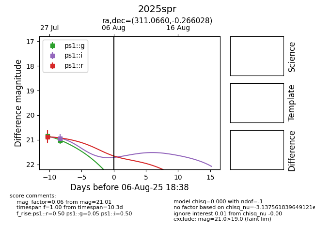

Target 2025spr at 2025-08-06 18:48, see:
YSE: ziggy.ucolick.org/yse/transient_detail/2025spr
alt names
2025spr (yse)
coordinates:
equatorial (ra, dec) = (311.0660,-0.26603)
galactic (l, b) = (46.4208,-25.00933)
photometry
last ps1::g=21.01, ps1::i=20.93, ps1::r=20.88
2 ps1::g, 1 ps1::i, 1 ps1::r detections
